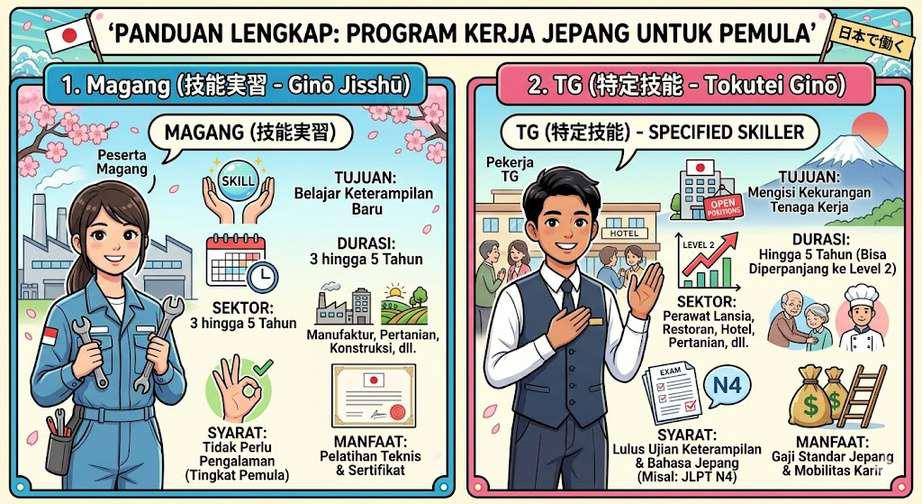
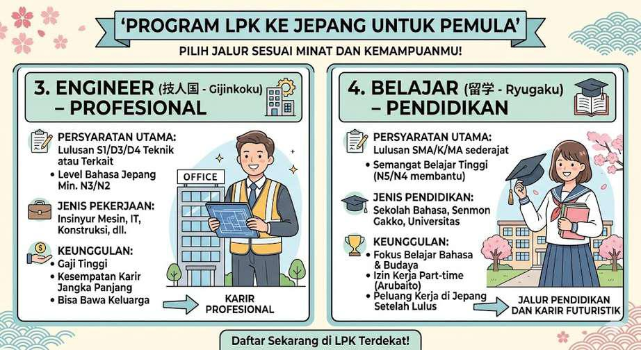

International Japan Economy Future Corp
"Bridging Indonesia to Japan - Training, Study, Career" / 「インドネシアと日本の架け橋 | 研修・留学・キャリア」
LPK IJEF Corp (International Japan Eco-Future Corp / 日本語研修センター | 送り出し機関 | 株式会社) adalah lembaga resmi pelatihan bahasa & budaya Jepang sekaligus lembaga pengiriman tenaga kerja, mahasiswa, dan profesional ke Jepang.
IJEF hadir untuk menjembatani kebutuhan:
- Indonesia: Memberikan solusi atas tingginya angka pengangguran.
- Jepang: Menjadi solusi atas krisis tenaga kerja.
Visi & Misi
Visi
Menjadi lembaga pelatihan & pengiriman tenaga kerja profesional terbaik di Indonesia yang diakui di tingkat global.
Misi
- Memberikan pelatihan bahasa & budaya Jepang berstandar internasional.
- Menyediakan akses pendidikan & karier global.
- Menjadi mitra strategis bagi pemerintah & perusahaan Jepang.
- Memberikan pendampingan jangka panjang bagi alumni.
Kenapa Harus ke Jepang?
Kekurangan tenaga kerja di Jepang memberikan peluang besar untuk Indonesia. Berikut adalah alasan utamanya:
Peluang Kerja Besar
Mengatasi kekurangan tenaga kerja dengan peluang besar bagi tenaga kerja Indonesia.
Gaji Stabil & Kualitas Hidup
Memperoleh pendapatan dengan gaji stabil serta standar kualitas hidup yang tinggi.
Negara Indah & Budaya
Menjelajahi negara yang indah dengan jutaan budaya sekaligus tempat wisata menakjubkan.
OUR SUPERIOR PROGRAM
Program unggulan resmi yang kami tawarkan mencakup:
技能実習 (Gino Jisshu)
特定技能 (Tokutei Ginou)
PENJELASAN PROGRAM
Kami sudah bekerja sama dengan beberapa Universitas untuk membuat program bersama yaitu para siswa LPK IJEF CORP bisa ikut program kerja di Jepang sambil kuliah D3 Sastra Jepang yang mana ini adalah program unggulan kami yang tidak ada di LPK manapun.
TUJUAN
Setiap siswa LPK IJEF selain bekerja di Jepang, juga sambil kuliah agar bisa melanjutkan pendidikan dalam waktu yang bersamaan. Ketika selesai kontrak di Jepang dan kembali pulang sudah dipastikan memiliki ijazah D3 Sastra Jepang.
Benefit of Our Program
Panduan lengkap jalur program kerja, profesional, dan pendidikan ke Jepang untuk pemula:

Infografis 1: Panduan Program Magang & Tokutei Ginou

Infografis 2: Panduan Program Engineer & Belajar (Ryugaku)
OUR PARTNERS
Mitra Dari Jepang yang bekerja sama dengan LPK IJEF Corp:
- Fuji Language School
- Human Life Care, Co., Ltd
- Kibi Okayama University
- Sunrise Juken
- CONNECT JOB Association
- YUIME株式会社
- 株式会社ONODERA USER RUN
- ヒューマンライフケア株式会社
- YURINOKI NIHONGO
- 株式会社資さんうどん
- 鈴木工業株式会社
- その他 (Lainnya)